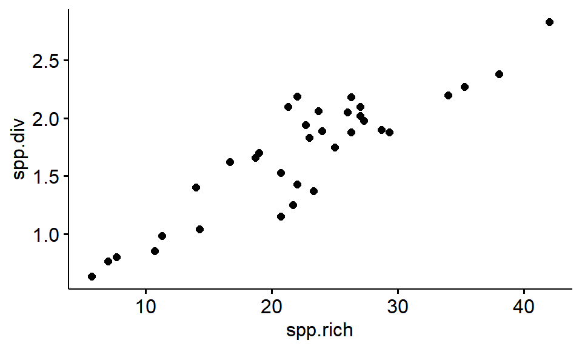
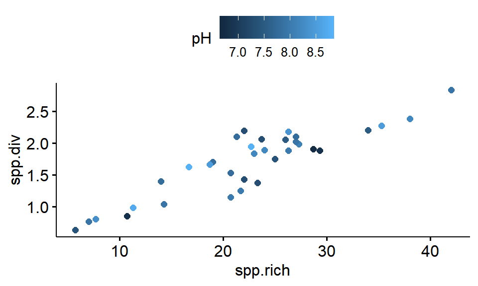

Chapter 11 Loading data from .csv files into RStudio
11.1 Introduction
We will be working with data from Table 2 of Medley and Clements (1998). (This data is featured in the ecological stats book by Quinn and Keough (2002), though I’m not a fan of how they analyse it.) The paper looks at how diatoms(photosynthsizing microrganisms known for their silica shells) are impacted by water quality in mountain streams.
11.1.1 Learning goals
11.1.2 Learning objectives
By the end of this lesson students will be able to
- Download raw datafiles by hand from teh internet
- Load .csv files using the R command read.csv()
- Load .csv files using RStudio’s point-and-click interface
11.1.3 R packageas
11.1.4 R commands
- read.csv
- View
- setwd
- getwd
- list.files
- read.csv
- ls
- dim
- names
- summary
11.1.5 Files
- Medley1998.csv
11.1.6 Potential Hangups
11.1.7 References
Medley & Clements. 1998. Responses of diatom communities to heavy metals in streams: The influence of longitudinal variation. [Ecological Applications 8:631-644.] (https://www.jstor.org/stable/2641255)
Quinn & Keough. 2002. Experimental design and data analysis for biologists.. A pdf version of the book is available online for free..
11.2 Preliminary step: download a .csv file
To load a .csv file into R we first need a .csv file to load. The data we’ll be working iwth can be downloaded from GitHub. First, go to the following link (it happens to be an obscure subfolder of the wildlifeR package)
https://github.com/brouwern/wildlifeR/tree/master/inst/extdata
Nesxt, locate the file Medley1998.csv
Figure 11.1: A list of files stored on GitHub.
Click on it; a table will show up.
Figure 11.2: An HTML .csv datafile store on GitHub. The raw file can be accessed by clicking on the Raw tab.
This table is formatted to look nice on a webpage (using some HTML that GitHub impose on the file). We want the raw file itself. To get it we need to click on the “Raw” tab.
Figure 11.3: A raw .csv datafile stored on GitHub. It can be downloaded By using Crtl+S or right clicking and selecting Save As
We will then see what looks like a text document against a white background with no formatting of any kind. We can now download the file by following these steps.
Either
- Use the shortcut Control + S to “Save as” the file
Or
- Right click (on Mac:…)
- “Save link as” (or the equivalent)
Then save the file to a location you know you can find, such as
- Documents
- Desktop
- Your network profile drive
Note that if you try to “Save as…” anything else but the white-screen raw text file you will run into problems.
After you download the file, open up Excel or another spreadsheet program and open up the file to confirm that what you downloaded is just a set of numbers. I you see long lines of text you might have accientally downloaded the HTML-formatted version of the file. Make sure you are downloading the very plain version of the file from the totally blank white screen.
11.3 Set the “working directory” (“WD”) in RStudio
We will now take the data we saved as a .csv file and load it into R. This can be tricky. First we need to tell R exactly where the file is by setting the working directory.
Follow these steps:
- Click on “Session” on the main menu
- on the menu: “File, Edit, Code, View, Plots, Session, …”
- Click on “Set working directory”
- Select “Choose Directory”
- Slect your computer’s Documents folder or wherever else you chose to save the file.
- Select the directory & click “Open”
- Note that the command “setwd()” shows up in the console followed by the location of the directory you selected
You can set your working directory to be anywhere on the computer. It is essential to make sure that the csv file you want to load into R is in your working directory.
Depending on the location you chose you might just see “~/” or some other shorthand.
11.4 Check the working directory with getwd()
You can confirm where you are at using the command getwd(); this can be handy if you’re not sure that you did things correctly or if R didn’t output what you expected.
getwd() # [ ]## [1] "C:/Users/lisanjie/Documents/1_R/git/git-teaching/teaching_2018_2019/2018_fall/biostats_fall_2018/4_biostats_bks_pkg/EDS/BK_R_Eco_Data_Sci"Here, even though when set the working directory R originally just displayed “setwd(”~/“)”, I can now confirm that I’m in my documents folder.
11.5 Check for the file you downloaded with list.files()
You can see what’s in your working directory using the command list.files(). Depending on how many files you have this could be a very long list. I have 40ish files and so won’t display them.
list.files() # [ ]If you have a ton of files being printed out you can narrow things down by telling R a text pattern to screen for.
list.files(pattern = "csv") # [ ]## character(0)If the file wasn’t successful downloaded R will just give you a cryptic message like this.
## character(0)This means the file isnt’ there and you need to redo the download to make sure either i)the file actually downloaded and ii)file is saved where you want it to be.
What we want to see is this
## character(0)OPTIONAL:Interacting with R via the console or the source viewer
You can enter R commands directly into the console, or type them into a script file in the source viewer and then execute.
If you’ve just been using the console try this:
- Click on the source viewer pane in RStudio
- Type “getwd()” in the source viewer
- Click on the “Run” button in the upper Right part of the pane
- The getwd() command is sent over to the consol and executed
11.6 Loading data into R using read.csv()
Copy and paste the .csv file name from the console into the source viewer then Execute the command “read.csv(file =”Medley1998.csv“)”. You can type it but you must be careful to have NO TYPOS. R is unforgiving when it comes to typos.
If you’ve done it corectly you’ll see the data table printed out in the console (I show only some of the output).
read.csv(file = "Medley1998.csv")## station pH DO cond temp alk hard ZN spp.rich spp.div prop.Achnanthes
## 1 ERI 8.5 8.4 180 11 119 122 2 35.3 2.27 0.37
## 2 ER2 8.0 8.0 145 14 52 84 407 21.7 1.25 0.48
## 3 ER3 8.0 8.0 150 15 54 86 336 20.7 1.15 0.35
## 4 ER4 8.8 7.8 240 18 77 126 104 16.7 1.62 0.02
## 5 FC1 7.8 8.6 55 9 30 42 7 19.0 1.70 0.17
## 6 FC2 7.4 8.8 130 8 41 84 1735 5.7 0.63 0.76You must have the file name in quotation marks and include the “.csv”. Any small error will cause things to not work.
Here are examples of mistakes that won’t work (no matter how much you cuss at it.)
read.csv(file = Medley1998.csv) #missing quotes " "
read.csv(file = "Medley1998.csv") #missing .csv
read.csv(file "Medley1998.csv") #missing =Note that R returns error messages in red, but they aren’t necessarily very helpful in figuring out what the problem actually is. This is an unfortunate feature of R, and reading error messages is a skill that must be learned.
11.6.1 Load data into an R “object”
Now type this: “med98 <- read.csv(file =”Medley1998.csv“)”. The “<-” is the assignment operator. What happens when you execute this command?
med98 <- read.csv(file = "Medley1998.csv") [ ]It might actually look like not much has happened. But that’s good! It means the data has successful been loaded into R. You have “assigned” the data from your file to the “object” named “med98”
11.6.2 The assignment operator “<-”
“<-” is called the “assignment operator”. It is a special type of R command.
“<” usually shares The comma key. Type “shift + ,” To get it.
If you type just “med98” and execute it as a command, what happens?
med98## station pH DO cond temp alk hard ZN spp.rich spp.div prop.Achnanthes
## 1 ERI 8.5 8.4 180 11 119 122 2 35.3 2.27 0.37
## 2 ER2 8.0 8.0 145 14 52 84 407 21.7 1.25 0.48
## 3 ER3 8.0 8.0 150 15 54 86 336 20.7 1.15 0.35
## 4 ER4 8.8 7.8 240 18 77 126 104 16.7 1.62 0.02
## 5 FC1 7.8 8.6 55 9 30 42 7 19.0 1.70 0.17
## 6 FC2 7.4 8.8 130 8 41 84 1735 5.7 0.63 0.76You should see the entire dataset spit out in the console (I’ve just shown the top part).
Now execute the list command ls(). You should now see “med98” shown in the conosle.
ls()## [1] "crabs" "eagle.df" "eagles" "eaglesWV.url"
## [5] "eaglesWV.url_2" "eaglesWV_2" "iris" "med98"
## [9] "msleep" "my.abc" "my.mean" "year"This means that the object you assigned your data is now in your “workspace.” The workspace is what I call the working memory of R.
We can learn about the med98 data using command like dim(), names() and summary().
How big is the dataset overall?
dim(med98)## [1] 34 11How man columns are there?
names(med98)## [1] "station" "pH" "DO"
## [4] "cond" "temp" "alk"
## [7] "hard" "ZN" "spp.rich"
## [10] "spp.div" "prop.Achnanthes"Are any of the variables categorical?
summary(med98)## station pH DO cond
## AR2 : 1 Min. :6.700 Min. :6.800 Min. : 40.00
## AR3 : 1 1st Qu.:7.425 1st Qu.:7.500 1st Qu.: 76.25
## AR5 : 1 Median :7.900 Median :7.600 Median :100.00
## AR8 : 1 Mean :7.841 Mean :7.794 Mean :116.76
## ARI : 1 3rd Qu.:8.200 3rd Qu.:8.175 3rd Qu.:150.00
## BR2 : 1 Max. :8.800 Max. :8.800 Max. :240.00
## (Other):28
## temp alk hard ZN
## Min. : 8.00 Min. : 10.00 Min. : 10.00 Min. : 2.0
## 1st Qu.:11.00 1st Qu.: 28.50 1st Qu.: 45.00 1st Qu.: 24.0
## Median :12.50 Median : 46.50 Median : 62.00 Median : 54.0
## Mean :13.06 Mean : 46.38 Mean : 66.76 Mean : 177.3
## 3rd Qu.:15.00 3rd Qu.: 64.00 3rd Qu.: 90.50 3rd Qu.: 213.2
## Max. :21.00 Max. :119.00 Max. :126.00 Max. :1735.0
##
## spp.rich spp.div prop.Achnanthes
## Min. : 5.70 Min. :0.630 Min. :0.0200
## 1st Qu.:18.77 1st Qu.:1.377 1st Qu.:0.2125
## Median :22.85 Median :1.855 Median :0.3900
## Mean :22.42 Mean :1.694 Mean :0.3756
## 3rd Qu.:26.82 3rd Qu.:2.058 3rd Qu.:0.4950
## Max. :42.00 Max. :2.830 Max. :0.7600
## OPTIONAL:Plot the Mendley 1998 data
As we’ll discuss in depth in a later section on plotting , one reason why the ggplot and ggpubr packages are so powerful is because they can easily plot things in good color schemes. We can make a basic scatterplot like this to show the positive correlation between Diatom species richness (the raw number of species identified in a given sample) on the x axis and species diversity on the y axis.
First, load the ggpubr package using the library() command. Note that you might get some output in red text telling you about the packages; it looks scary but its not.
library(ggpubr)Now plot the scatter plot. Note that the syntax for ggpubr requires that variables be contained within quotes.
ggscatter(data = med98, y = "spp.div",x = "spp.rich")
We can color-code the points by their pH
ggscatter(data = med98, y = "spp.div",x = "spp.rich", color = "pH")
11.7 Loading .csv files using RStudio [ ]
Frequently in code I will have things written up to load data using the read.csv() command. However, there is a point-and-click way of loading spreadsheet data into RStudio too.
There’s on pane in RStudio that doesn’t get used much by basic R users, the “Environmnet, History, Connections, Build, Git” pane (I think it might not have “Git” on it if you don’t have certain packages loaded).
Figure 11.4: A list of files stored on GitHub.
If you click on the spreadsheet-looking icon “Import Dataset” and select “From text (base)” you can navigate to where your .csv file is located and select it. A preview window will then pop up which will show you the raw (which should look like what you originally down loaded) and a preview of how RStudio will format the data. (If the preview doesn’t look right you can change some of the option in teh dropdown menus to see if things line up.)
Figure 11.5: A list of files stored on GitHub.
When you click “Import” RStudio will execute some code in the console (eg “Medley1998 <- read.csv(”~/Medley1998.csv“)”) to load the data and then call the command View() to generate preview of the data in a new tab in the script view. (Note that this View panel only lets you look at the data; you can’t edit it.)
11.8 Challenge
.csv files are the most common format for sharing data in R. “csv” stands for “comma sperated volume”, and you will note that each value on a line is sperated by a comma (some thigns with computers do make sense on the firt try!).
Sometimes you will encounter .txt files which seperate data other ways, such as spaces, tabs, or by lining up everything explicitly in rows. On the wildlifeR GitHub directory we used before (https://github.com/brouwern/wildlifeR/tree/master/inst/extdata) these is a file “Medley1998.txt”. Download this file and load it using RStudios Import Dataset function. See if RStudio recognizes that its not .csv.